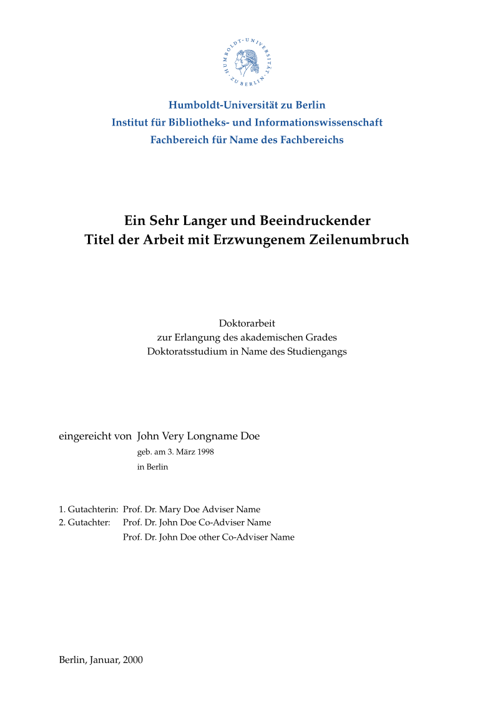
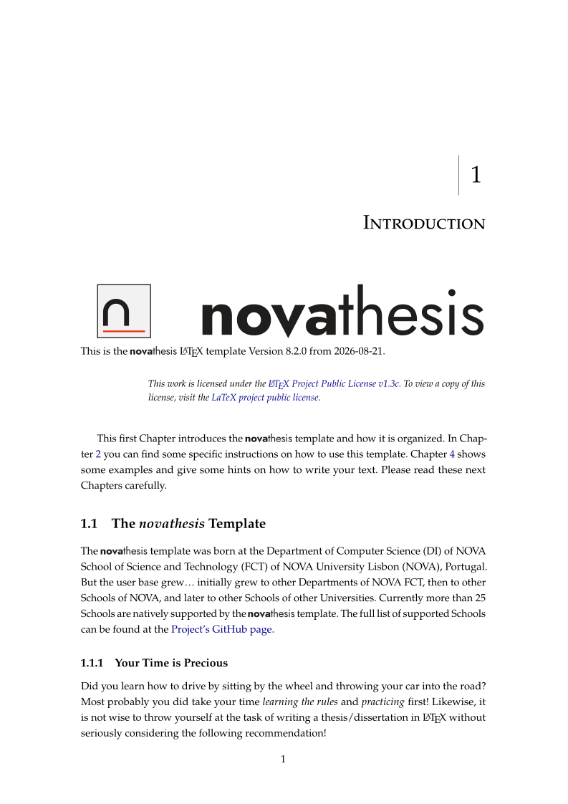

Showcase
Every page the template produces, for each school and degree: back cover, front cover, front page, an example chapter, and the spine underneath. Missing panels simply mean that school does not use that page.
All samples are compiled from the current template with LuaLaTeX, in English.
Size
The template itself
novathesisThe novathesis manual


NOVA University Lisbon — NOVA School of Science and Technology
NOVA FCTPhD Dissertation


MSc Thesis


MSc in Computational Biology & Bioinformatics


BSc in Computer Science


NOVA University Lisbon — School of Social Sciences and Humanities
NOVA FCSHPhD Dissertation


NOVA University Lisbon — Instituto de Tecnologia Química e Biológica António Xavier
NOVA ITQBPhD Dissertation — Gray


PhD Dissertation — Green


NOVA University Lisbon — National School of Public Health
NOVA ENSPPhD Dissertation


Universidade de Lisboa — Instituto Superior Técnico
ULISBOA ISTPhD Dissertation


Universidade de Lisboa — Faculty of Sciences
ULISBOA FCULSupport for this school contributed by Martim Costa Seco
PhD Dissertation


Universidade de Lisboa — Lisbon School of Economics & Management
ULISBOA ISEGPhD Dissertation


Universidade de Lisboa — Faculty of Veterinary Medicine
ULISBOA FMVPhD Dissertation


Universidade de Lisboa — Faculty of Pharmacy
ULISBOA FFULSupport for this school contributed by Afonso Nóbrega (nobrega8)
PhD Dissertation


Universidade do Minho — School of Engineering
UMINHOSupport for this school contributed by Bruno Pereira (b-pereira)
PhD Dissertation


MSc Thesis


Iscte – University Institute of Lisbon — School of Technology and Architecture
ISCTE-IUL ETAPhD Dissertation


Universidade Lusófona de Humanidades e Tecnologias — Departamento de Engenharia Informática e Sistemas de Informação
ULHT DEISIPhD Dissertation


Universidade Lusófona de Humanidades e Tecnologias — Escola de Ciências Econômicas e das Organizações
ULHT MGEPhD Dissertation


Universidade do Porto — Faculdade de Ciências
UPORTO FCUPSupport for this school contributed by Guilherme Borges (sgtpepperpt)
PhD Dissertation


Instituto Politécnico de Lisboa — Instituto Superior de Engenharia de Lisboa
IPL ISELSupport for this school contributed by Gonçalo N. Duarte (MrDuartePT)
MSc Thesis


MSc in Biomedical Engineering


Polytechnic Institute of Setúbal — Escola Superior de Tecnologia de Setúbal
IPS ESTSMSc Thesis


Nursing School of Porto
ESEPMSc Thesis


Humboldt-Universität zu Berlin — Institute of Library and Information Science
HU BERLINPhD Dissertation

